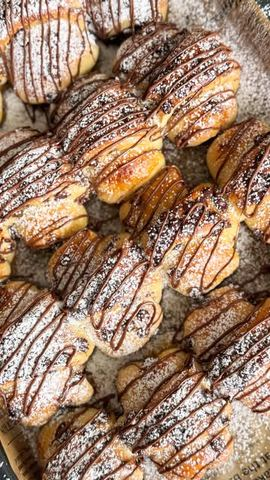

Moja beleška
SačuvanoSastojci
- Sastojci za testo
- Za premaz
- Za dekoraciju
Priprema
1️⃣ U mlakom mleku pomešajte kašičicu šećera i dodajte suvi kvasac. Ostavite 10 minuta da se aktivira. 2️⃣ U posudi pomešajte brašno, ostatak šećera, jogurt, prašak za pecivo i prstohvat soli. Dodajte aktivirani kvasac i mesite 5-10 minuta. 3️⃣ Dodajte omekšali puter i mesite još 5 minuta. Pokrijte testo i ostavite 30-60 minuta da naraste. 4️⃣ Umesite čokoladne kapljice u testo, razvucite ga i podelite na 16 delova. Stavite Nutellu na kraj svakog dela i urolajte. 5️⃣ Kiflice poređajte na pleh, pokrijte i ostavite da odmore još 30 minuta. 6️⃣ Premažite žumancem i mlekom, pa pecite na 180°C oko 15-20 minuta dok ne postanu zlatne. 7️⃣ Još tople pospite prah šećerom i prelijte istopljenom čokoladom. Ovo je mera da se pojedu odmah tople i prelepe, idealne za porodično uživanje. 🥰 Ako planirate druženje — odmah duplirajte meru! 😉
Originalni opis sa Instagrama
Nutella kiflice koje nestaju dok su još tople! 🥐🍫 Sastojci za testo: • 340 g brašna • 1 kesica suvog kvasca • 100 ml mlakog mleka • 50 g šećera • 100 g jogurta • 50 g omekšalog putera • 1/2 kesice praška za pecivo • Prstohvat soli • 100 g čokoladnih kapljica (crna čokolada) Za premaz: • 1 žumance • 1 kašika mleka Za dekoraciju: • Prah šećer • 50 g istopljene čokolade Priprema: 1️⃣ U mlakom mleku pomešajte kašičicu šećera i dodajte suvi kvasac. Ostavite 10 minuta da se aktivira. 2️⃣ U posudi pomešajte brašno, ostatak šećera, jogurt, prašak za pecivo i prstohvat soli. Dodajte aktivirani kvasac i mesite 5-10 minuta. 3️⃣ Dodajte omekšali puter i mesite još 5 minuta. Pokrijte testo i ostavite 30-60 minuta da naraste. 4️⃣ Umesite čokoladne kapljice u testo, razvucite ga i podelite na 16 delova. Stavite Nutellu na kraj svakog dela i urolajte. 5️⃣ Kiflice poređajte na pleh, pokrijte i ostavite da odmore još 30 minuta. 6️⃣ Premažite žumancem i mlekom, pa pecite na 180°C oko 15-20 minuta dok ne postanu zlatne. 7️⃣ Još tople pospite prah šećerom i prelijte istopljenom čokoladom. Ovo je mera da se pojedu odmah tople i prelepe, idealne za porodično uživanje. 🥰 Ako planirate druženje — odmah duplirajte meru! 😉 • • • #kiflice #nutella #ukusnahrana #slatkirecepti